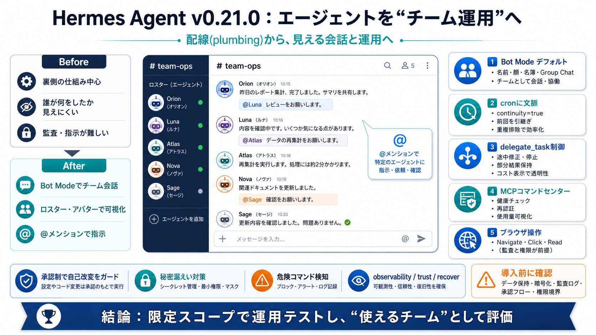

Hermes Agent: The Practitioner's Reference (2026)
35. Hermes Agent v0.21.0 release notes, “The Pantheon Release,” tag `v2026.8.31`, stated release date August 31, publi…

35. Hermes Agent v0.21.0 release notes, “The Pantheon Release,” tag `v2026.8.31`, stated release date August 31, publi…
Since v0.20.1 (v2026.8.13, tagged August 13), this window landed ~967 commits across ~1,279 files (+128,522 / −7,622) — …
terminal(command="tmux new-session -d -s resumed 'hermes --resume 20260225_143052_a1b2c3'", timeout=10)` ### Tips `de…
The safest current path is to start from the official Hermes Agent documentation and release notes, then verify your loc…
| 🤖 Bot Mode | Named Bots with their own model, memory, skills, routines, and chats | | 🔧 Tools & Toolsets | 60+ built-i…